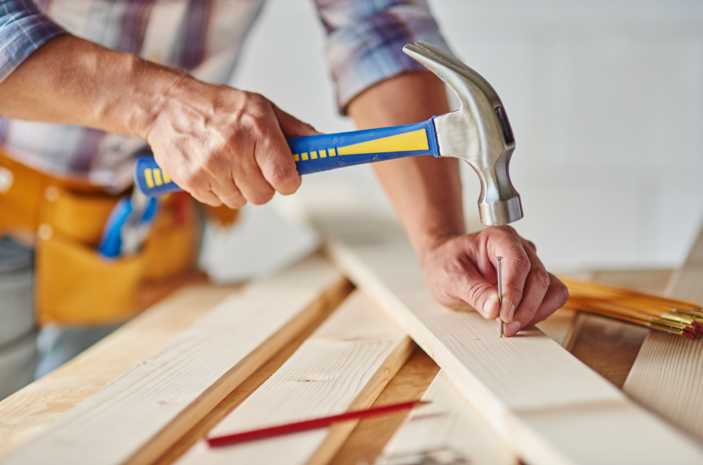
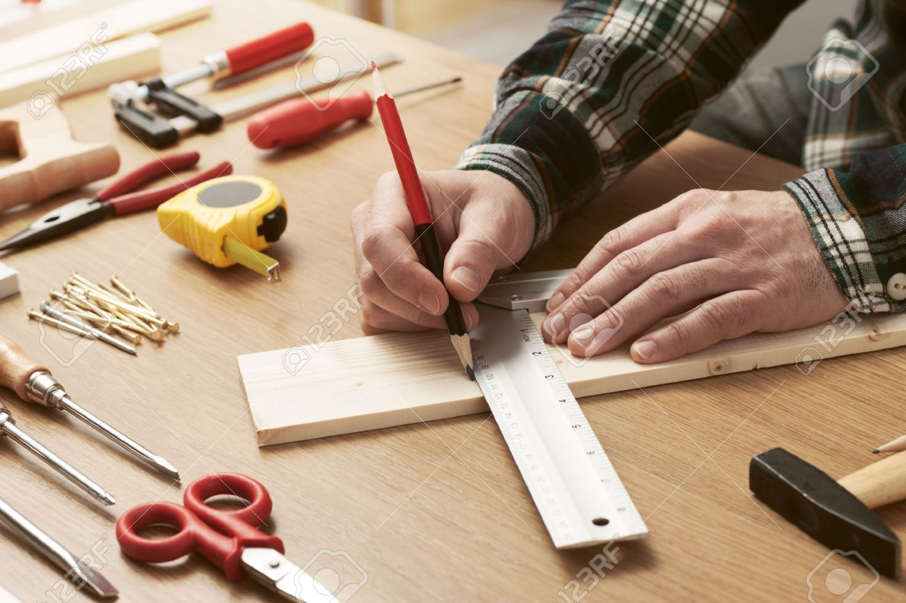

Barkácsolás egyszerűen otthon
Egy jó szerszám mindig kéznél van, ha javítani vagy építeni kell valamit otthon. Inspirálódj praktikus barkácsötletekből, és hozd ki a legtöbbet a saját projektjeidből!

Apró javítások, nagy eredmények
Egy egyszerű szerszám is rengeteget segíthet a mindennapi javítások során. Fedezd fel, hogyan teheted könnyebbé az otthoni munkákat néhány praktikus barkácstipp segítségével!

A barkácsolás a tervezéssel kezdődik
Minden sikeres barkácsprojekt egy jó ötlettel és pontos tervezéssel indul. Ismerd meg, hogyan válhat egy egyszerű elképzelésből saját kezűleg elkészített alkotás!